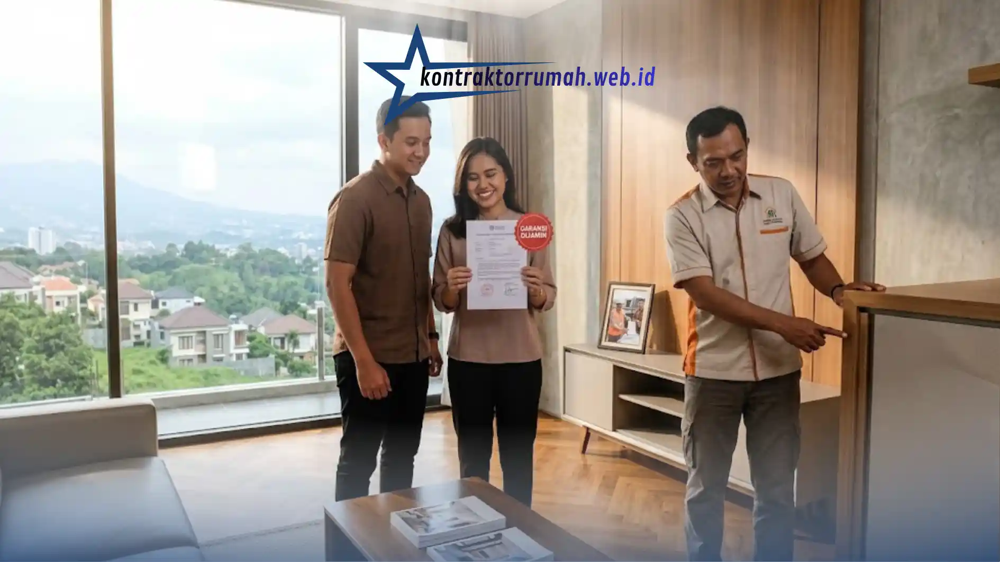

Membangun atau merenovasi hunian di Kota Kembang membutuhkan perencanaan yang matang. Kontur tanah yang berbukit, curah hujan tinggi, serta karakter lingkungan perumahan di Bandung menuntut penanganan dari tim yang benar-benar memahami kondisi lokal. Salah memilih pelaksana proyek bisa berujung pada anggaran membengkak, jadwal molor, bahkan kualitas bangunan yang mengecewakan.
Poin Penting
- Kondisi tanah berbukit dan curah hujan tinggi di Bandung menuntut kontraktor dengan pengalaman menangani kondisi lokal.
- Rincian RAB per item pekerjaan dan sistem pembayaran bertahap adalah indikator kuat transparansi kontraktor.
- Masa garansi tertulis 3-12 bulan wajib tercantum jelas dalam surat perjanjian, bukan sekadar janji lisan.
- Legalitas usaha (NIB) dan portofolio yang bisa diverifikasi membedakan kontraktor resmi dari yang sekadar bermodal media sosial.
- Bandingkan minimal 3 penawaran dan pastikan kontrak kerja lengkap sebelum menyetujui pekerjaan.
Kenapa Warga Bandung Perlu Selektif Memilih Kontraktor?
Berbeda dengan kota-kota di dataran rendah, Bandung memiliki tantangan konstruksi tersendiri yang tidak bisa disamakan begitu saja dengan penanganan proyek di kota lain.
Kontur tanah berbukit membutuhkan perhitungan pondasi dan drainase yang lebih cermat agar rumah tidak mudah retak atau mengalami rembesan air saat musim hujan. Suhu udara yang sejuk juga membuat banyak pemilik rumah ingin memaksimalkan pencahayaan alami dan ventilasi, sehingga desain arsitektur perlu disesuaikan dengan karakter iklim setempat.
Kepadatan area perumahan di sejumlah kawasan menuntut manajemen proyek yang rapi agar tidak mengganggu tetangga sekitar selama masa konstruksi. Kontraktor yang berpengalaman menangani proyek-proyek di Bandung biasanya sudah memiliki solusi teknis untuk tantangan-tantangan ini, sehingga risiko masalah di kemudian hari bisa ditekan sejak awal.
Ciri Kontraktor yang Transparan dan Bergaransi
Dua kata ini sering dijadikan slogan pemasaran, tapi seperti apa wujud nyatanya di lapangan? Berikut indikator yang bisa Anda periksa langsung sebelum menandatangani kontrak kerja.
Rincian RAB yang detail per item pekerjaan. Kontraktor yang baik akan membedah biaya material, upah tukang, hingga biaya overhead secara terpisah, bukan sekadar memberi angka total. Ini membuat Anda tahu persis ke mana uang Anda dibelanjakan.
Sistem pembayaran bertahap sesuai progres fisik. Pembayaran idealnya mengikuti persentase pekerjaan yang sudah selesai (misalnya per termin 20-30%), bukan diminta lunas di muka.
Dokumentasi progres berkala. Kontraktor profesional biasanya mengirimkan foto atau laporan mingguan agar Anda tetap bisa memantau meski tidak berada di lokasi setiap hari.

Masa garansi tertulis dan dokumentasi serah terima jadi bukti nyata komitmen kontraktor rumah Bandung yang transparan.
Masa garansi tertulis. Umumnya berkisar 3 hingga 12 bulan untuk pekerjaan struktur dan finishing, tergantung skala proyek. Pastikan poin ini tercantum jelas dalam surat perjanjian, bukan hanya janji lisan.
Legalitas usaha yang jelas. Kontraktor resmi biasanya memiliki NIB (Nomor Induk Berusaha) dan portofolio yang bisa diverifikasi, bukan sekadar akun media sosial tanpa jejak proyek nyata.
Cara Memilih Kontraktor yang Tepat, Langkah demi Langkah
1. Cek portofolio dan spesialisasi. Pastikan mereka punya pengalaman membangun rumah dengan gaya arsitektur yang Anda inginkan, entah itu minimalis modern, tropis kontemporer, atau klasik.
2. Survei proyek yang sedang berjalan. Kontraktor yang percaya diri dengan kualitas kerjanya biasanya tidak keberatan jika Anda ingin melihat langsung proyek lain yang sedang mereka kerjakan.
3. Minta referensi klien sebelumnya. Bertanya langsung kepada pemilik rumah lain tentang pengalaman mereka bekerja sama seringkali lebih jujur daripada testimoni di website.
4. Bandingkan minimal 3 penawaran. Jangan tergoda memilih yang termurah tanpa memeriksa detail spesifikasi materialnya, harga murah kadang berarti kualitas material yang diturunkan.
5. Pastikan kontrak kerja lengkap dan legal. Semua kesepakatan soal waktu pengerjaan, nilai kontrak, spesifikasi material, hingga konsekuensi keterlambatan harus tertulis dan ditandatangani kedua belah pihak.
Kesalahan yang Sering Terjadi saat Memilih Kontraktor
Beberapa kesalahan berikut paling sering dijumpai di lapangan dan sebaiknya dihindari sejak awal proses pemilihan kontraktor.
- Tergiur harga murah tanpa memeriksa rincian spesifikasi material.
- Tidak membuat kontrak tertulis karena merasa "sudah kenal baik" dengan kontraktor.
- Melewatkan proses survei lokasi sebelum menyetujui RAB.
- Tidak menanyakan siapa penanggung jawab lapangan (site manager) selama proyek berjalan.
Catatan dari tim Kontraktor Rumah: Kontraktor Rumah beroperasi sebagai mitra konstruksi berbadan hukum PT resmi, siap membantu penyusunan RAB transparan dan draf kontrak kerja yang jelas sejak awal proyek. Rincian spesifikasi teknis, dokumentasi progres berkala, hingga masa garansi struktural menjadi standar kerja tim dalam menangani proyek bangun maupun renovasi rumah di kawasan Bandung dan sekitarnya.
FAQ Seputar Kontraktor Rumah Bandung
Memilih kontraktor rumah Bandung yang tepat adalah langkah krusial pertama untuk mewujudkan rumah impian tanpa drama di tengah jalan. Siapkan RAB yang matang, cek legalitas dan portofolio, dan jangan pernah mulai pekerjaan tanpa kontrak tertulis yang memuat spesifikasi, jadwal, dan masa garansi secara eksplisit. Kontraktor dengan rekam jejak terbukti akan menyelamatkan investasi jangka panjang Anda.